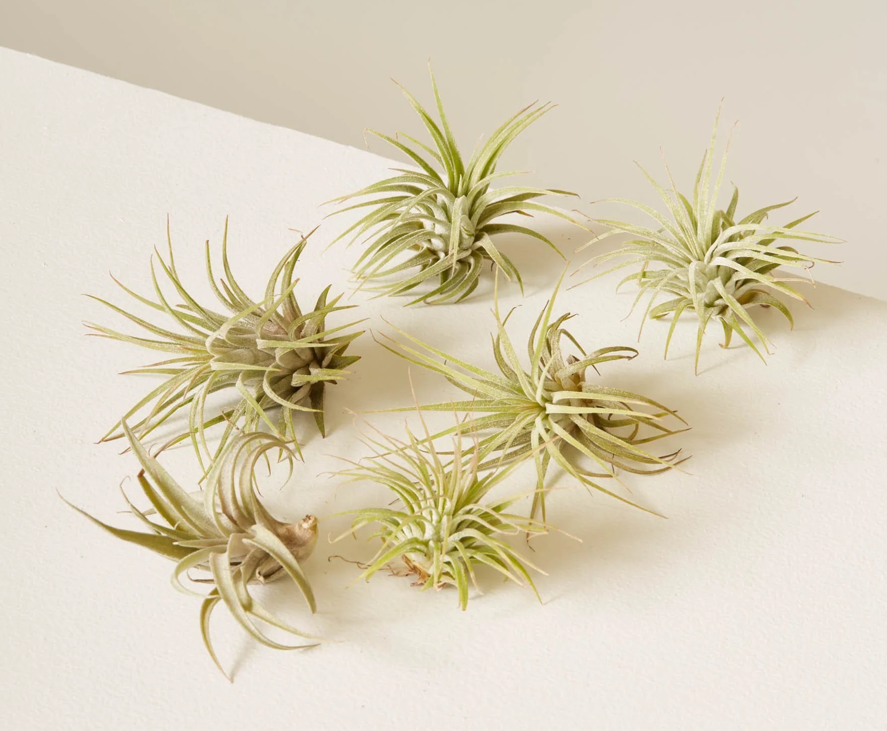

Also known as Tillandsia, these unique plants don't require soil to grow. They absorb water and nutrients through their leaves. They primarily originate from the tropical and subtropical regions of Central and South America. These areas typically have warm, humid, climates. They're often found in forests, deserts, and mountains, growing on trees, rocks, and other surfaces. Air plants are adaptable and can survive in various environments, as they absorb moisture and nutriends from the air through their leaves. However, they thrive best in environments with good air circulation, moderate humidity, and bright, indirect light.
These plants grow from bulbs and often produce beautiful flowers. Amarylis and paperwhites are popular bulb plants for indoor cultivation.

These are known for their beautiful blooms. They can range from small flowers to large, colorful ones. Some popular flowering houseplants are orchids, African violets, and peace lilies.
These plants are primarily grown for their leaves. They come in different shapes, sizes, and colors. Examples include pothos, snake plants, and ferns
These plants have thick, fleshy parts that store water, making them drought-resistant. They often have unique shapes and require minimal care. Succulents include jade plants, aloe vera, and echeveria, while cacti come in various shapes and sizes. Found in arid, dry, and/or rocky environments: North & South America, Africa, Madagascar, Australia. They adapted to thrive in environments where water is scarce, evolving unique features like the ability to store water in their stems or leaves to survive extended periods of drought.
In general, vining plants are adaptable and can be fouund in various climates, but many of them origionate from regions where they have ample sunlight and warmth, which influences their growth patterns and overall health.